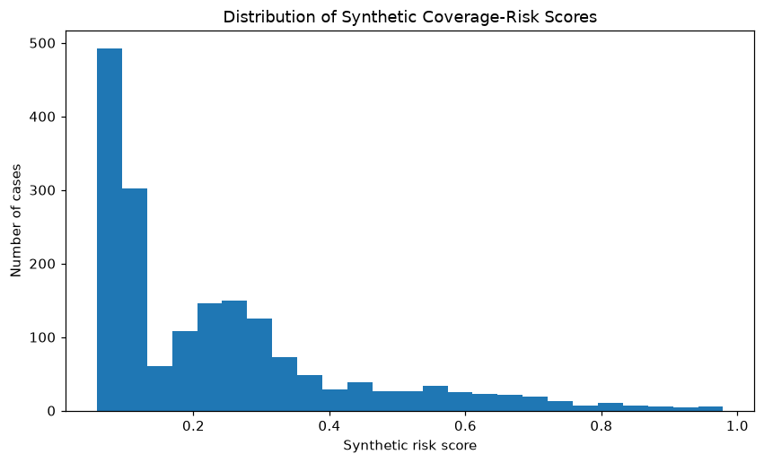
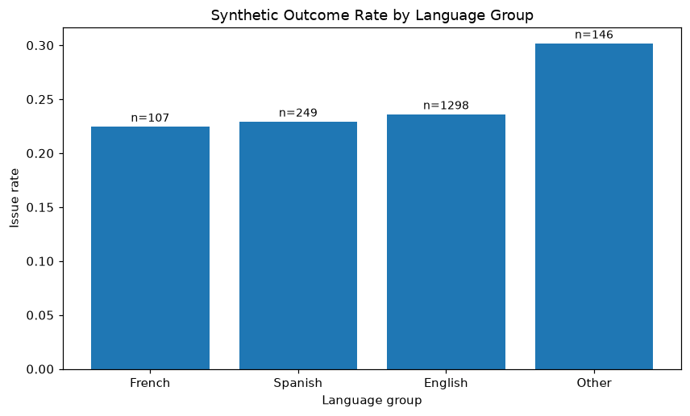

Coverage can fail before the claim is ever submitted.
The project began with medical debt and narrowed to the health-insurance understanding gap. Coverage Navigator moves the intervention upstream by asking whether potential coverage issues can be identified before care is delivered.
Forecast. Explain. Verify.
Appointment scheduled
↓
Coverage information reviewed
↓
AI-assisted risk forecast
↓
Potential issue flagged + explanation
↓
Claims specialist review
↓
Verify benefit documents
↓
Resolve / contact provider / escalate
↓
Coverage clarified before care
The model does not make the final coverage decision. It forecasts risk and explains why a case may need review. A human specialist verifies the case and remains accountable.
Model signals
Plan information, prior authorization, network status, documentation completeness, code alignment, service type, and historical claim patterns.
Human-in-the-loop
Human review, audit logs, data-quality checks, subgroup monitoring, escalation, and abstention when confidence is insufficient.
Beyond accuracy
Fairness, workflow adoption, patient experience, alert utility, privacy compliance, and organizational capacity matter alongside technical performance.
Portfolio demonstration data
The figures below use synthetic data only and illustrate the monitoring a real pilot could require.



The alert threshold is a staffing decision.
On held-out synthetic data the model reaches an ROC AUC of 0.77. At the default classification threshold of 0.50 it also misses roughly three out of five preventable issues, because that default optimizes for overall accuracy rather than for catching problems before care.
| Threshold | Recall | Precision | Cases sent to review |
|---|---|---|---|
| 0.20 | 0.76 | 0.40 | 46% |
| 0.30 | 0.56 | 0.45 | 30% |
| 0.40 | 0.49 | 0.58 | 20% |
| 0.50 | 0.39 | 0.66 | 14% |
Catching three-quarters of issues means reviewing nearly half of all appointments. That is a hiring question and an institutional judgment about the cost of a missed issue against the cost of an unnecessary review. It belongs to the workflow owner, not to a library default.
An ambitious 18-month implementation test
The original proposal asked for an 18-month pilot across 25 hospitals and 500 clinics. Instructor feedback challenged the scale and absence of cost figures. This version responds with phased deployment, resource categories, explicit privacy planning, and scale gates tied to governance readiness.
Responsible deployment is a design decision.
Healthcare organizations are rapidly adopting AI-assisted tools while governance expectations are evolving. The opportunity is to shape responsible workflows before opaque automation becomes normalized.
“One of the strongest submissions I received.”
The feedback highlighted the clear executive ask, strong explanation of forecasting versus automated decision-making, specific risk mitigations, human verification, and evaluation beyond model accuracy. It also identified concrete next steps: cost, urgency, privacy, and pilot realism.
The model is not the intervention.
Technical performance may justify a pilot. Long-term public value depends on governance, incentives, workflow integration, user trust, accountability, and the capacity to monitor and adapt the system over time.
Responsible AIHealthcare AIHuman-in-the-LoopPolicy AnalysisAI Governance